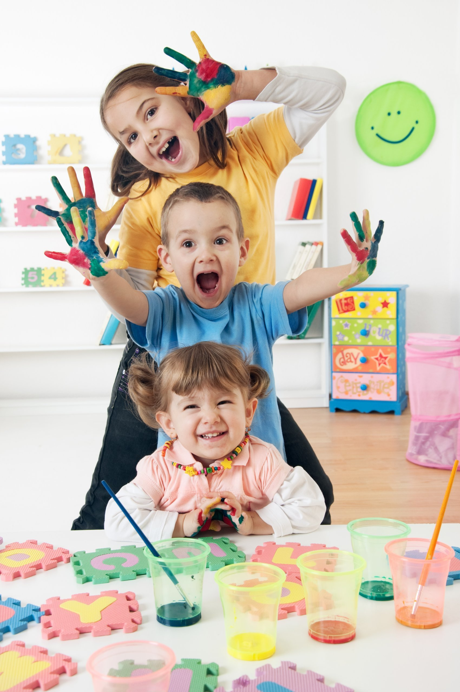

Театральное искусство:
- Школа сценический искусств Архдрамы (Петровский парк,1)
тел: 8 (8182) 41-20-57, сайт: Школа сценический искусств Архдрамы
- Таланта (Воскресенская, 59)
тел: +7 (921) 075-36-94, сайт: Таланта
- Театральный мир (Троицкий просп. д.96, корп.2)
тел: +7 (818) 265-31-67, сайт: Театральный мир
Художественные школы:
- Детская художественная школа № 1 (ул. Тимме, 22, корп. 1)
тел: +7 (818) 223-69-96, сайт: Детская художественная школа № 1
- Графика (Воскресенская, 55 1 помещение; 1 этаж)
тел: +7 (938) 421-28-24 , сайт: Графика
- Изостудия ХАМЕЛЕОН (Троицкий пр-т 94, офис 15 (2 этаж))
тел: +7 (902) 196-19-58, сайт: Изостудия ХАМЕЛЕОН
Музыкальные школы:
- Классика (ул. Воскресенская, 94)
тел: + 7 (8182) 64-63-14, сайт: Классика
- Детская Музыкальная школа № 1 Баренцева Региона (ул. Урицкого, 8)
тел: + 7 (8182) 28-87-53, сайт: Детская Музыкальная школа № 1
Гончарное мастерство:
- Гончарная студия Юлии Высоких (пр. Чумбарова-Лучинского, 37)
тел: +7 (995) 304-12-21, сайт: Гончарная студия Юлии Высоких
- Школа народных ремесел (пр. Чумбарова-Лучинского, д. 33)
тел: + 7 (8182) 20-41-31 , сайт: Школа народных ремесел